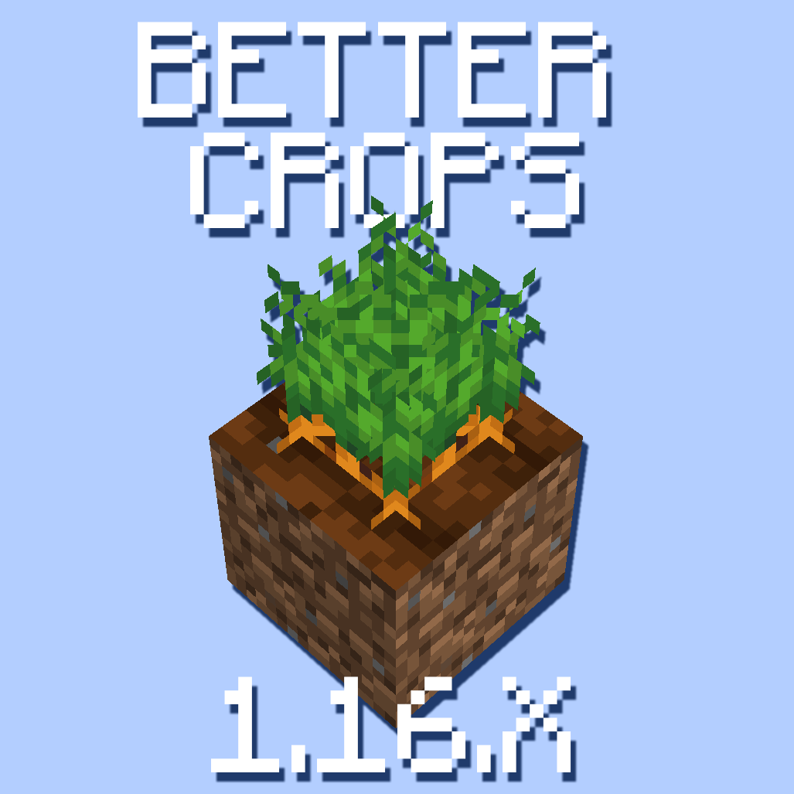

Better Leaves
Minecraft Version: 1.16.x
This Resourcepack will improve visual look of leaves.
Better Crops

Minecraft Version: 1.16.x
This Resourcepack will improve visual look of crops.
Better FarmLands
Minecraft Version: 1.16.x
This Resourcepack will improve visual look of farmlands.
2D beds
Minecraft Version: 1.16.x
This Resourcepack will bring back old texture of beds in inventory.